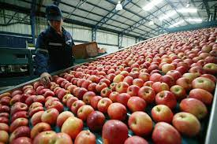

la manzana procede de un arbol caduafolico generalmente de 4 a 4,5m de altura en cultivo y hasta 9m en naturaleza
cuando se cultiva, el tamano, la forma y la densidad de la rama determina mediante el metodo de seleccion y recorte de portainjertos
las hojas de color verde oscuro son ovalos simples con margenes cerrados y se inclinan lijera mente hacia abajo; se dispone a lo largo de la rama de forma alterna
las manzanas son originarias de asia (central) especificamente de los bosques de los actuales China, Kazajistan y Kirguistan
una tradicion turquica dice que la manzana proviene de la zona de Alma-ata o Almati antigua capital de Kazajistan, cuyo nombre es la forma adjetiva del sustantivo
((Manzana)) en Kazajo entre los 6 paises que mas toneladas de manzana pordujeron en el 2022 se encuentran
